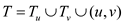
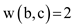

A tree is defined as the connected undirected graph without the cycle or circuit. An undirected graph said to be a tree if there is exist only a unique path between the graph vertices.
• A spanning tree is the sub graph of the graph that contains the all vertices to define a tree. A graph may contains the one or more than one spanning tree.
• A minimum spanning tree (MST) is defined as weighted graph G of the spanning tree, in which the sum of edges is equal to the minimum weight.
• Basically the Minimum spanning tree has the following properties: It contains the each vertex in graph and the weighted sum of the all edges should be minimum.
The following steps shows that  belongs to
the some minimum spanning tree if be the
minimum-weight spanning edge in the connected graph G.
belongs to
the some minimum spanning tree if be the
minimum-weight spanning edge in the connected graph G.
• Consider a minimum spanning tree T and edge. Assume A which is define as: and it contains the two trees. Tree shows the appearance of vertex u and is the tree which shows the appearance of vertex v. Likewise, in which contains the vertices and contains the vertices of.
• Now the vertices is the cut
which is crossed by the edge respect to
the A. any crossing edge which cut the region may cause of
categorize of region into two tree.
• Now if there is a crossing edge (a, b) with the w (a, b) <w (u, v) then new spanning tree can be define as: having the weight:
As the
Now add the zero in the above equation and it can be rewrite as:
Because:
Now it can be write as:
Because 
And the above result is less than which can be write as:
This is a contradiction to the statement for all
 ,
which cross the cut. So the
edge is the
light edge crossing cut.
,
which cross the cut. So the
edge is the
light edge crossing cut.
Therefore,
contains the some minimum spanning tree.
A spanning tree is the sub graph of the graph that contains the all vertices of a tree. A graph may contain one or more than one spanning tree.
A minimum spanning tree (MST) is defined as weighted graph G of the spanning tree, in which the sum of edges is equal to the minimum weight.
Consider the Theorem 23.1 (refer chapter 23, section 23.1 of textbook) statement.
Professor Sabatier gives the converse of this theorem and states that (u, v) is the light edge for the cut. The assumption of the professor is false. The reasons are given below:
• Consider the safe edge A. The safe edge definition says that when any edge is added to the set of edges A, then the resultant subset will also have some minimum spanning tree.
• This particular specification about the safe edge does not provide the reference of light edge in any way.
• For the situation from a counter example, there may be many numbers of safe edges from the S to V-S but it is not possible to have all edge to be light. Consider the above figure as the counter example: V= {P, Q, R, S, T, U}.
• Suppose S={P,Q,R}, and A={(P,Q), (Q,R)}. From the above diagram, it can be see that edges (P,S), (Q,T) and (R,U) all are safe edges, but only edge (R,T) is the light edge for the cut. Hence assumption of the professor is false.
Therefore, the above example proves that the Professor Sabatier’s conjectured converse theorem is incorrect.
A tree is defined as the connected undirected graph without the cycle or circuit. An undirected graph said to be a tree if there is exist only a unique path between the graph vertices.
• A spanning tree is the sub graph of the graph that contains the all vertices to define a tree. A graph may contains the one or more than one spanning tree.
• A minimum spanning tree (MST) is defined as weighted graph G of the spanning tree, in which the sum of edges is equal to the minimum weight.
• Basically the Minimum spanning tree has the following properties: It contains the each vertex in graph. And the weighted sum of the all edges should be minimum.
To show that belongs to
the some minimum spanning tree if be the
minimum-weight spanning edge in the connected graph G.
• Consider a minimum spanning tree T and edge. Assume A which is define as: and it contains the two trees. Tree shows the appearance of vertex u and is the tree which shows the appearance of vertex v. Likewise, in which contains the vertices and contains the vertices of.
• Now the vertices is the cut
which is crossed by the edge respect to
the A. any crossing edge which cut the region may cause of
categorize of region into two tree.
• Now if there is a crossing edge (a, b) with the w (a, b) ) then new spanning tree can be define as: having the weight:
As the
Now add the zero in the above equation and it can be write as:
Because
Now it can be write as:
Because
And the above result is less that which can be write as:
Thus, this contradicts with the above result shows that
contains the some minimum spanning tree. Therefore for all
the, which
crossing the cut. So the
edge is the
light edge crossing cut.
Cut edge: A Cut (S, V-S) is a line that divides the graph into two disjoint sets of vertices on its either side. So, on removing the edge that crosses the cut creates sets of disjoint vertices on either side thereby increasing the number of connected components.
Light edge: It is an edge which crosses a cut and is the minimum in weight when compared to all the other edges that cross that cut.
Consider a graph which is an equilateral triangle.
There are three edges in this graph -
The weight of each edge in this graph is equal. Let it be called .
Three cuts exist in this graph, namely, cut1, cut2 and cut3.
There are three edges crossing the cuts:
• and
cross the
cut1.
• and cross the cut2.
• and
cross the
cut3.
Since, all the three edges have the same weight. Therefore, all the edges crossing any cut in this graph is a light edge.
Hence, the above graph K 3 is a graph in which every edge cross a cut and is also a light edge.
Minimum Spanning Tree: Minimum spanning tree comprises of the edges which connect every vertex of that graph with the minimum total weight possible.
The graph above which is called K3 is not a minimum spanning tree because it is a cyclic graph. The minimum spanning tree of this graph can be created with 2 edges only. The following is the diagram showing the minimum spanning tree for the graph, K3.
The minimum spanning tree for this graph can be drawn in three ways as shown above.
Hence, the graph doesn’t form a minimum spanning tree.
There are the following steps to show that, there is the minimum spanning tree (MST) of G which does not contain e on the basis of provided specification:
• Consider that T is define as the minimum spanning tree (MST) of G’ which is define as. Suppose that u and v are define as the two vertices which is adjacent to the edge e, edge e is the maximum weight edge on the some cycle of.
• If Edge e is added to the graph G’ then it will produce the graph G. If T is define as the MST of some cycle of graph G’ then it is also a spanning tree of some cycle of graph G as the only both contains the same vertices, only the difference exist between both is of edge e.
• T is spanning tree of graph G, but is it the MST of graph G? Assume that T is not the MST of graph G. if this is happened then this would be lead a conflictness.
• Now, if T is not defined as the MST of some cycle of graph G then there should be a T’ tree which should be minimum spanning tree of G’ with less than weight of G and it will have the edge e.
• Since MST T’ is exist as the MST of graph G’, and difference between both G and G’ is of e edge then MST T’ and MST T will have common number of edge equal to the n-2. It is so because a simple tree of n-vertices has n-1 edge. And ending edge in MST T’ is e edge.
• Assume that e’ edge be the ending edge for the MST T. As the weight of the maximum edge e is more than the weight of the maximum edge e’, so MST T’ cannot be the MST after all, which is the contradiction.
Therefore, T is the minimum spanning tee for the both G and G’.
Assume (for contradiction) two minimum spanning trees of G. To prove that the graph has a unique minimum spanning tree, show that every edge of T is also in which means that are the same.
Consider any edge which is
not in. If the
edge is removed
from , it cuts
the tree into two components. T becomes disconnected,
resulting in a cut . The edge
is
a light edge crossing the cut .
, it cuts
the tree into two components. T becomes disconnected,
resulting in a cut . The edge
is
a light edge crossing the cut .
Consider the edge be the unique light edge that crosses. Since the light edge crossing is unique, the edges are the same edge.
Hence, the edge. As it is considered that is arbitrary, every edge in T is also in.
Hence, the assumption that there are two minimum spanning trees of G is wrong.
Hence, the graph has a unique minimum spanning tree if for every cut of G, there is a unique light edge crossing the cut.
Counter example for the converse: Consider the following graph with 3 vertices a, b, c and weights and.
The minimum spanning tree is as shown below:
In the graph, there is a minimum spanning tree containing the edges (a, b) and (a, c). But the cut ({a}, {b, c}) does not have a unique light edge crossing the cut.
A tree is defined as the connected undirected graph without the cycle or circuit. Graph is the collection of the nodes or vertices and edges that connect the nodes. Graph is categories into different categories:
• A directed graph said to be the strongly connected graph if for all vertices v, w there exist a path from the v to w and also a path from the w to v. If any graph does not follow the property of the strongly connected graph then it said to be the weekly connected graph.
• An undirected graph said to be a tree if there is exist only a unique path between the graph vertices. In the mesh network each node is connected to the other in the network.
In any graph in which edges are associated with some numerical value then graph is called as weighted graph. Normally the edge weights are the non-negative integers. Weight of the edges are oftenly referred as the cost of edges.
There are the following condition steps for conclusion to argue that if weights of the all edges in a graph are the positive then any subset of the edges which connects the all vertices and having minimum total length must be define as tree:
• A graph which contains only non-negative weights, the subset of graph edges that connects the all vertices must be acyclic as the cycle by the definition contains the at least single edge which can be removed without changing the connectivity of subset graph.
• Suppose a graph is define as G and a minimum graph which contains the cycle is define as g. Consider, if someone remove the cycle or the remove the redundant edge from the graph g then it is called as g’.
• Now as the one edge is remove from the graph g then the weight of the graph g’ will be less than the weight of the graph g or it can be written as.
• But for argument, g cannot be the minimum weight graph. So the subset graph created by the edge connecting of all vertices in such a way that the weight must be minimum for the acyclic.
In the same manner, it can be display that subgraph does not contain the cross edge. These are the condition for the Graph G defining as minimum spanning tree because graph G is cycle which contains the all vertices and if this is directed graph then it will not contain any cross edge.
Though, above defined conditions not holed for a negative weighted tree. Consider the following example which shows that calculated conclusion based on the condition is false for the negative weight.
In the above graph, if it have cycle which is formed in the way of P to Q, Q to T and T to P. The minimum in such a case is unidentified because minimum can be randomly increase by looping the edge of P to S that decrease of the total weight of path in every loop.
A spanning tree is the sub graph of the graph that contains the all vertices to define a tree. A graph may contains the one or more than one spanning tree.
• A minimum spanning tree (MST) is defined as weighted graph G of the spanning tree, in which the sum of edges is equal to the minimum weight.
• Basically the Minimum spanning tree has the following properties: It contains the each vertex in graph. And the weighted sum of the all edges should be minimum.
• To find the minimum spanning tree, there are various types of algorithm is exist such as Kruskal and Prims algorithm in graph theory and data structure.
• Kruskal's algorithm is used to find the MST from a graph G (V, E). Here V is the set of vertices and E is the set of edges. A spanning tree of a graph G (V, E) is subgraph of G having all the vertices of G but contains no cycle. MST of a graph is one which total cost should be minimum.
• To find the MST (Suppose T is the final MST) of a weighted (w) graph G (V, E) following are the algorithm steps:
MST-KRUSKAL (G, w)
1. // define initially to be empty set.
T=φ;
2. For each vertex v ?? G, V, Make empty set out of v.
MAKE-SET (v);
3. Sort the edges of G, E in increasing order by weight w;
4. For each edge (u, v) ?? G.E, taken from incremental order or sorted list.
// If both edge are belongs to the different set
FIND-SET (u) ≠ FIND-SET (v);
// add the edge (u, v) to the tree T;
s
// Put the u and v in the one single set;
UNION (u, v);
5. return T
Assume that T is MST of graph G and L is the sorted list of the graph edges with respect to the weight in tree T. To show that for the any other MST T’ of graph G, the sorted list L will be same in T’, following steps need to be considered:
• Consider the following graph with the weighted edge. Kruskal algorithms will find the MST in the sorted order.
• Suppose that based on the Kruskal algorithm, the minimum spanning tree T in the specified order L is calculated as shown below:
• If T’ is minimum spanning tree then it can be found out in the similar way from the Kruskal algorithm in the specified sorted order L’ which is shown as below:
• Now if the specified sorted order L and L’ for the both minimum spanning tree are not equivalent or then it shows the contradiction because if they differ at any point then Kruskal algorithm have to pick the smaller of the two.
• So to obtain the L’ is impossible as from the above calculated minimum spanning tree, it is shown that:
For T, sorted order list L= {1, 2};
For T’, sorted order list L= {1, 2}.
A minimum spanning tree (MST) is defined as weighted graph G of the spanning tree, in which the sum of edges is equal to the minimum weight. Basically the Minimum spanning tree has the following properties: It contains the each vertex in graph. And the weighted sum of the all edges should be minimum. To find the MST of a graph such that the maximum degree of any vertex in the spanning tree does not exceed a fixed constant k are described in the following steps:
1. List all the edge of graph in increasing order.
2. Select smallest edge from the list and add to the spanning tree if inclusions of the edge not create the cycle. If it creates cycle then remove this particular edge.
3. Repeat above step until spanning tree contain the n-1 edge, where n is the no. of node in graph.
According to the provided specification, T is the minimum spanning tree (MST) of the graph G= (V, E) and V’ is define as the subset of set of vertices V. To proof that if subgraph T’ of T is connected then it will be a MST, there are the following steps:
• It is assumed that T’ is the subgraph of T which is persuaded by the V’ and G’ is the subgraph of G which is made by the V’.
• Assume that subgraph T’ is not the minimum weighted spanning tree for the graph G’. Let’s suppose that graph G’ have a minimum weighted spanning tree A’.
• If someone merged subset of the edges T\T’ to the minimum spanning tree S’ then it will produce the spanning tree S for the graph G.
• Now weight of tree S would be minimum as compare to the weight of tree T. and this produce the contradiction that tree T is the MST.
• Thus the assumption of minimum spanning tree is incorrect hence T’ is the minimum spanning tree in graph G’.
For given a graph G and a MST T, someone reduce the weight of the any one edge in MST T then T will still the MST for the graph G. There are the following steps with respect to this proof:
• Suppose in minimum spanning tree T, {E1,
E2, E3…
En-1} be the set of edges with their
respected weight of {L1, L2,
L3 … Ln-1} and assume that
Ei be an edge which has weight
Li and this weight is reduced by the some value
which is known as  .
.
• Now assume the opposite of the proof means if weight
Li of edge Ei is decreased by
the then
T is not follow the property of minimum spanning tree.
• Suppose that T’ be the new MST. As the weight Ei is the only edge which weight was changing so that in the minimum spanning tree edges are.
• Now consider that E’ be the edge which is replacing by Ei in the minimum spanning tree T’ and weight L’ be the weight of the edge E’.
• As the edge E not the edge E’ was the edge in minimum spanning tree T, weight of edge Ei will be less than the weight of edge L’ that can be written as .
• As the weight Li of the edge Ei was
reduced by the value which
can be written as and from
the above point the equation can be formed as: Thus,
.
• As and all other edge except Ei and E’ are remain as it as in MST T and T’, the total weight of the edges in tree T are less than the total weight of the edges in E. or it can be write as:
Hence tree T’ cannot be a MST and Tree T is the minimum spanning tree in graph G.